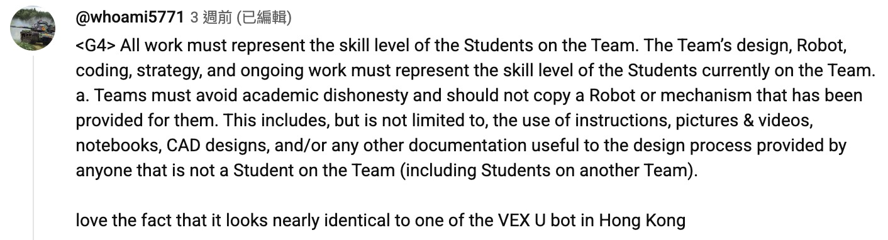

EzLib Docs
Competition stack: LemLib + EzDrive hybrid drive system
Download EzLib
Click the link below to download the latest EzLib package:
Download ezLib.zip
Units & coordinates (memorize these)
ezPID.drivedistance is in inches, measured along the heading at the start of that call—not motor degrees.ezPID.turntargets an absolute heading in degrees. LemLib heading uses 0° toward +Y, clockwise positive.timeoutis in milliseconds; when time runs out, motors stop and that motion ends.- Pose lives in LemLib
chassis.getPose(); motor output and settle checks go through the globalezPID(ez_compat::EzDrive).
Online helpers: pid.ykyle.eu (PID), moveToPose simulator. Simulators do not replace on-field / SD CSV testing.
You are viewing: 2.0.0
This version teaches chassis drive/turn, writing auton, Brain Dash, and PID tuning. Use the top-right control to switch to 2.0.1 (adds lift-arm docs).
- Matching code branch:
EzLib_2.0.0_beta(PROS 4.2.3) - Brain: Dash / PID / anim; autons via
auton_select - When ready, try the judge interview practice
You are viewing: 2.0.1
On top of 2.0.0, you get three extras you will use a lot:
- Lift arm (Liftlib) — see Chapter 8, with copy-paste examples
- Brain right CONSOLE — use
ezlib::printffor live values (like a notebook) - Pressing Dash from the PID page clears the PID UI automatically (no more red monitor surprises)
You do not need to read everything at once. Copy the examples first, then change ports and angles.
Read before use: important warnings
Please read the following carefully before using EzLib
⚠️ Important warning
This chapter contains key notes we strongly recommend you follow. Skipping it can lead to serious problems.
Understand first—or expect a G4
Before using this EzLib stack, you must understand these core ideas:
- LemLib odometry strengths and limits: why error builds up over time?
- EzDrive PID logic: why short, precise moves (in inches) matter?
- When and how to reset pose: when do you need
wallReset/getRealPose? - Hybrid design philosophy: why you cannot rely on one tool for the whole auton?
If you skip reading and understanding this guide and jump straight into using the system, I strongly expect you will get G4’d in competition. That is not a threat—it is the natural result of skipping the “why.”
Understand → know the principles → then use it. That is the only reliable path to avoid a G4.

Suggested learning path
Learn in this order:
- Understand the core ideas (this chapter)
- Read Setup & initialize carefully
- Learn chassis PID (inches / absolute heading)
- Learn LemLib motion commands (shared ezPID after bind)
- Apply it in auton writing, and learn Brain UI (standalone LVGL / Type R Dash)
- Self-check with judge interview practice (≥90% = comfortable with EzLib)
Skipping steps often leads to match-day failure.
Why you cannot run on LemLib alone?
LemLib odometry is powerful, but you must not trust it alone for a full 15/60-second auton. Collisions, wheel slip, and weight shifts create accumulated error. If you only trust the opening (0,0) pose, mid-to-late auton will drift badly.
So this stack uses a hybrid architecture: LemLib handles complex curves / long tracking (moveToPose, etc.), while custom EzDrive (ezPID) handles high-precision short drive/turn PID, and you force pose resets at key moments (wallReset / getRealPose). That is how auton stays consistent.
Chapter 1: System setup & initialize
In main.cpp’s initialize(), set up LemLib, EzDrive, and background tasks once. This defines how the robot physically responds.
LemLib chassis setup notes
For basic LemLib chassis hardware setup (Drivetrain, Sensors, PID declarations), see the official LemLib docs. This guide focuses on competition logic and integrating EzDrive.
Important: the EzDrive constructor calls chassis.bindEzDrive(this). After that, moveToPoint, moveToPose, turnToHeading, turnToPoint, swingToHeading, and swingToPoint share ezPID’s drive/turn PID—you do not tune a second set of LemLib angular gains. Any LemLib ControllerSettings left at construct time are mainly for the construct API; after bind, real output comes from ezPID.
startI and settle logic
startI: integral only runs when |error| is below this value and startI != 0; integral clears on error sign change.
Settled when error stays in the small/large windows long enough and |derivative| <= velocity_threshold (see exit/vel settings above).
ezPID.turn and chassis.turnToHeading share the same PID after bind, but motion logic differs slightly (direction / minSpeed / earlyExit, etc.). For everyday auton, ezPID.turn is enough.
Project structure & declaration habits
Simple rule: you edit customs; library files usually stay untouched. chassis / ezPID / pidTuner are set up in src/main.cpp.
| Path | What you need to know |
|---|---|
src/main.cpp | Boot setup, chassis, PID numbers |
include/customs/ + src/customs/ | Your code: auton, buttons, mechanisms |
include/ezlib/ | Library (usually do not edit) |
Typical includes: #include "ezlib/ez_compat.hpp", #include "customs/dash_config.hpp".
2.0.1 adds the lift library. Remember folders like this:
| What you want to change | Where to go |
|---|---|
| auton / buttons / pneumatics | customs/ (your workbook) |
| chassis PID, boot | src/main.cpp |
| lift arm | also declare armLift in main.cpp; details in Chapter 8 |
| Brain print (CONSOLE) | #include "ezlib/console.hpp" then ezlib::printf |
Beginner mindset
You do not need to understand every folder at once. Get the drivetrain moving first, then add the arm, then print values. When stuck, copy the examples below and change ports and angles.
How Brain UI works
Use telem_dash (Dash), the PID page, and the anim overlay. Register autons with auton_select::init({name, fn}) and switch names with ←→. Details in Chapter 7.
Dash temperatures: dash_config.hpp (file you must edit)
Brain Dash DRV / MCH temperature rows are controlled only by include/customs/dash_config.hpp—you do not need to edit ezlib/telem_dash.cpp.
- DRV:
format_drive_temps— left LF/LM/LB | right RF/RM/RB (leftMotors/rightMotors) - MCH:
format_mech_temps— L_intake / R_intake | low / high roller
For MotorGroup use get_temperature(index): index is the order inside the list in main.cpp (0, 1, 2…), not the smart-port number. Example: leftMotors({-14, -15, -16}) → index 0 = port 14. Standalone pros::Motor uses motor.get_temperature().
Motor / pneumatics notes
Negative port = reversed (e.g. -14). Do not declare a second pros::Motor(...) on the same port already in a MotorGroup—they fight over reverse/encoder and break ezPID.drive. Intake uses separate motors; drivetrain uses only leftMotors / rightMotors.
Pneumatics: pros::adi::Pneumatics(port, start_extended); second arg false = retracted at boot. Driver buttons via pneumaticsBtn() (controls.cpp)—call only when tuner is off (avoids X/A conflicts). Common: X = arm/hook sequence, A = hook.toggle(), Y = matchload.toggle().
Chapter 2: EzDrive chassis PID
In auton, EzDrive (global ezPID) runs the most precise point-to-point moves and turns. Distance is in inches; turn targets absolute heading (degrees).
Auton distance caution
ezPID.drive uses inches; ezPID.turn uses absolute heading (degrees). Measure with controller menu 1 D:.
Hard rule: every distance has its own best PID
One set of gains cannot do everything
A common beginner mistake: tune one kp, ki, kd set and expect it to push 5 inches and 50 inches equally well. Physically that is impossible. Long moves need more braking (kd) against inertia; short nudges need sharper proportional push (kp).
So ezPID.drive / turn support inline PID (one-shot gain override). After the move, global gains restore; startI stays unchanged. For a specific distance, pass custom {.p, .i, .d}.
PID simulator
Build intuition before tuning on the robot:
pid.ykyle.eu — PID simulator
Adjust P/I/D, watch overshoot, then use Brain/controller PID tuner + /usd/pid_tune_log.csv on the field. The simulator does not replace real testing.
⏳ Async / sync control & WaitUntil
Set the last argument of drive or turn to true for async mode: the next line runs immediately (e.g. start intake early). Only one motion owns the drivetrain at a time; arcade is disabled while pidTuner is open or ezPID.is_busy().
Important: always wait until done (waitUntilDone)
After using ezPID.waitUntil(inches) for mid-move actions, you must call ezPID.waitUntilDone(). That ensures the move fully finishes before the next chassis command; otherwise old and new motions collide.
ezPID.waitUntilDone() returns when motions_pending == 0 and !chassis.isInMotion(), or after a safety timeout with cancel_movement(). For long LemLib moves, use chassis.waitUntilDone().
Parameter reference:
distance_inches: straight target distance (inches; can be negative).angle: turn target absolute heading (degrees).max_speed: max speed (0–127).timeout: forced exit time (ms). Safety net against waiting forever.gains: optional one-shot{.p, .i, .d}override.async: whentrue, chassis moves in the background and code continues.
Chapter 3: LemLib motion commands
For long distances, half-field moves, or smooth curves, use LemLib. async defaults to true; pass false to block, or call waitUntilDone() afterward.
Shared ezPID after bind
After EzDrive is bound, drive/turn PID for the motions below all go through ezPID. Your set_drive_constants / set_turn_constants affect both LemLib curves and ezPID.drive / turn.
| Call | PID (after bind) | Notes |
|---|---|---|
turnToHeading / turnToPoint | turn | Can set direction / minSpeed / earlyExit |
swingTo* | turn + swing_power | Locks one side |
moveToPoint | drive + turn | Angular output drops to 0 under 7.5 in |
moveToPose | drive + turn + lead | No separate ezPID API equivalent |
1. moveToPoint (point-to-point straight)
The basic move: the robot aims for the straight-line path to a point. Note: it does not care which way the nose points when you arrive.
2. moveToPose (curved pose move)
Requires arriving at (x, y) with heading exactly theta. Angular control uses turn PID (not heading-hold PID).
Interactive simulator
Practice parameters first with the moveToPose simulator to see how each setting changes the path.
Common parameters
| Parameter | What it means / when to use |
|---|---|
forwards | Default true. false means reverse into the target. |
lead | How early the robot starts turning. Too low = sharp corner; too high = huge arc. |
maxSpeed | Max speed (0–127). |
minSpeed | Minimum speed. Non-zero switches exit logic to “less precise, smoother.” |
earlyExitRange | Chaining trick. Best with minSpeed > 0. Ends early once inside the range. |
direction | Turn direction (common for turn/swing). |
3. turnToHeading & turnToPoint
In-place pivot turns. After bind, angular PID matches ezPID.turn.
Chapter 4: Reset odometry
Back to the intro: to fight accumulated error, mid-auton you must re-correct (x, y, theta) using field walls or sensors. Implementation lives in src/ezlib/relocate.cpp.
Wall reset (wallReset)
Uses current + low speed to decide “we are truly jammed against the wall,” then hard-writes the matching axis to 0 and writes theta.
| Parameter | Meaning |
|---|---|
axis | 'x': treat as flush with the X-axis wall → setPose(x, 0, theta); 'y' → setPose(0, y, theta) |
velocity | Constant tank(v,v); negative = reverse bump, positive = forward bump (often ±30–60) |
theta | Heading forced in when stall is detected |
timeout_ms | Safety timeout; stall ≈ |vel|<2 and current >2000mA for ~100ms |
After bump: tank(0,0), short delay, then restore BRAKE_COAST. Usually follow with getRealPose to fix the other axis.
Sensor relative correction (getRealPose)
Mid-auton fine correction. Meaning is relative: expected − (actual_perp − golden) × side, where actual_perp = get_kf_dist × cos(α), and α is the angle between the beam and wall normal (from chassis θ)—you do not need CAD offset from distance sensor to tracking center (golden already includes it).
| Parameter | Setup & meaning |
|---|---|
expected | Where you expect that axis to be (e.g. near Y=0 → pass 0). |
golden | When the robot is truly at expected (measure as square to the wall as possible), the distance the sensor should read (inches). Measure once on practice field and hard-code—includes mount offset. |
sensor | dist_front / back / left / right. Internally filtered via get_kf_dist (bad reads → 999 or previous). |
side | +1: sensor faces the increasing axis (north/east); -1: south/west. |
Built-in getRealPose protections
1. KF / filtered reads: always check conf (<30 / PROS_ERR) → return expected.
2. Heading cos projection: use current chassis θ + sensor mount for actual_perp = actual × cos(α); small angles often skip another wallReset. Abort if |α| > 25°.
3. Ignore tiny error: if |diff| < 0.25", no correction.
4. Correction clamp ±6": single-step limit so one bad read cannot jump pose.
5. Avoid field tolerance: only asks “how many inches off from practice golden,” so fence install error is not baked into absolute field inches.
| Question | Answer |
|---|---|
| Do I need CAD sensor offset? | No. Measure golden once at the correct pose and it is included. |
| θ when getRealPose computes distance? | You do not force it to 0—the function reads chassis.getPose().theta for cos. Odom/IMU must be roughly right. |
What θ to write in setPose(..., θ)? | Whatever heading the following path assumes. Whole segment as (0,0,0) → write 0; wall-distance-only fix → pass current theta. Do not hard-write 0 when you are actually at 45°. |
| Method | Approx. time | When to use |
|---|---|---|
| cos compensation (built-in) | 0 ms | Everyday mid-auton; off by a few to ~teen degrees |
Short ezPID.turn then reset | ~200–400 ms | θ already >15–20° off |
wallReset | ~0.8–1.5 s | Need to hard-lock one axis / do not trust distance |
Measuring golden: physically align / jig the bot at the mid-auton reset pose → read that cell’s inches on Brain Dash DIST → put it in code. If a new field’s fences differ a lot, remeasure golden instead of rewriting full offset geometry.
Compared with RW-Template absolute reset
RW-Template distance reset uses absolute field coordinates (walls at ±70.25", requires CAD sensor offsets; angled walls use rays). EzLib intentionally uses an expected−actual relative model + cos(α): tuning cost is one golden per reset segment; messy fences mean remaking golden, not rewriting offset math. No built-in MCL.
Want low CAD, messy fields, and “I roughly know where I am” mid-auton → use getRealPose + wallReset. Want angled-wall rays / optional MCL / tight absolute-field paths → RW-Template is more complete, but you must measure offsets carefully and accept field tolerance into the system.
Chapter 5: State machines (FSM) & anti-jam
Do not hard-code mechanism control (e.g. intake) as raw motor.move() inside opcontrol. Prefer enum + switch FSMs so you can support smart anti-jam and async behavior. Driver pneumatics: pneumaticsBtn() (controls.cpp)—call only when tuner is off so it does not fight X/A tuning keys.
Put all motor-power logic in a dedicated update function running in a background task. On current overload, the system can take over and reverse.
Chapter 6: Real auton writing examples
Put the pieces together: LemLib curve → reset → ezPID short precision. Units are always inches / degrees.
From push-bot to writing auton (suggested workflow)
Goal: get drive/turn stable, then push / drive by hand to measure real distance and heading, then write into customs/autons.cpp.
1. Tune PID (get chassis right once)
- Insert SD (optional), unplug field control.
- X+A open PID tuner (see Chapter 7).
- Use B/Y (±12″), L1/R1 (±90°) until little oscillation and good settle; Print and paste numbers back into
initialize(). - Optionally pull CSV and plot error with AI (see SD CSV).
- Online helper: pid.ykyle.eu.
Writing a long auton before PID is solid means measured numbers get eaten by oscillation / incomplete settles.
2. Real push / drive; watch traveled and pose
On practice field, with tuner off:
| What you want | How |
|---|---|
| Straight inches traveled (For PID Distance) | Right stick → controller displayMenu = 1 → D: = ezPID.get_traveled(); T: = heading |
| Field pose X / Y / θ | Right stick → displayMenu = 2; or Brain Dash pose |
| Clear traveled to remeasure | DOWN (reset_pid + back to Dash) or UP cancel/reset |
Inches to wall (measure golden) | Dash DIST four cells |
Push to measure straight distance: place bot at start → controller menu 1 → DOWN/UP clear traveled → slowly push to next stop → read D: into ezPID.drive(inches, …) (negative for reverse). For turns, read θ and use ezPID.turn(absoluteAngle, …).
Use pose for curves / long moves: Menu 2 or Dash note start/end (x, y, θ) → chassis.moveToPose(...); try the moveToPose simulator for params. Mid-route correction: Chapter 4.
3. Write the auton
- Declare in
include/customs/autons.hpp; implement insrc/customs/autons.cpp. - In
src/main.cppauton_select::init({...})add{"Display name", &yourFunction}. - On practice field use ← / → to pick auton (name shows on Dash/controller); DOWN+B runs once to verify.
- Add segment by segment: measure → write
drive/turn/moveToPose→ run → measure next.
Tips
ezPID.drivedistance = inches along the heading at start of that call, not chord length to a field (x,y) (usemoveToPoint/moveToPosefor that).- When pushing to measure, match auton start pose/heading; after a turn, DOWN clear traveled before measuring the next straight.
- Controller menu 1
D:is the same idea as “For PID Distance”; Brain Dash is handy for pose / DIST / temps together.
1. Opening pose strategy: why drop “full auto align”?
Do not use auto_init_universal as your main opening
auto_init_universal still exists in src/ezlib/relocate.cpp, but in matches we do not recommend it as the primary start. Two reasons:
1. Offset measurement is hard: precisely measuring each sensor’s X/Y offset from tracking center is extremely difficult.
2. Field tolerance hurts: competition fences often have ±1"+ error. Boundary ranging pulls that error into your system.
👑 Top teams’ standard opening: physical alignment
The most stable, blunt approach: jam a flat bumper or alignment jig hard against the field wall, then hard-write pose to 0.
2. Skills: the perfect hybrid combo
Standard flow: “curve path” → “wall reset” → “relative distance correct” → “high-precision fine move.”
3. Extremely clean driver period (opcontrol)
A pro opcontrol is only a “translator”: read controller → change global state → return. Never bury long-blocking logic inside it. Note: use pidTuner.suppress_arcade() to decide whether arcade is off; handle pneumatics only when !pidTuner.controller_mode().
Heavy work (anti-jam, UI, telemetry) belongs in background tasks started from initialize(). Keep each opcontrol loop pass fast so the controller stays zero-latency.
Chapter 7: Tools & debug
Practice tools include Brain Dash (themeable), PID tuner, SD CSV, controller monitor, animations, and field-control teardown. Auton uses headless auton_select.
🖥️ Brain Dash (telem_dash)
In src/main.cpp, pick themes with two constexprs (initialize() calls set_loading_theme / set_dash_theme). Loading and Dash are chosen separately.
| Parameter | Value | Effect |
|---|---|---|
k_loading_theme | 1 | none — skip boot animation |
k_loading_theme | 2 | Type R — triple-gauge ignition |
k_loading_theme | 3 | Spear of Longinus — red progress |
k_dash_theme | 1 | Type R — gauges/cards (BATT / pose / DIST / DRV / MCH / RAM) |
k_dash_theme | 2 | Terminal — black/green text Dash |
k_dash_theme | 3 | Light — white/black text Dash |
| Parameter | Value | Effect |
|---|---|---|
k_loading_theme | 1 | none — skip boot animation |
k_loading_theme | 2 | Type R — triple-gauge ignition |
k_loading_theme | 3 | Spear of Longinus — red progress |
k_loading_theme | 4 | KeeTa Rider — splash logo |
k_dash_theme | 1 | Type R — gauges/cards (BATT / pose / DIST / DRV / MCH / RAM) |
k_dash_theme | 2 | Terminal — black/green text Dash |
k_dash_theme | 3 | Light — white/black text Dash |
k_dash_theme | 4 | V5Console — classic Brain console look |
Type R Dash and the PID page are mutually exclusive; opening PID/anim hides gauges so the battery meter does not bleed through.
Text Dash (themes 2 / 3)
Full-screen text, e.g. auton=..., batt=87%, ram=0.12M, pose / dist / drv / mch. Invisible bottom-right pid opens the PID page.
Map temperatures in include/customs/dash_config.hpp. On Type R, batt/DIST colors hint status from battery and confidence.
📊 Measuring distance: For PID Distance (inches)
Practice field displayMenu = 1
While pushing the robot by hand, the controller can show ezPID.get_traveled() (For PID Distance). Units are inches—the best way to set ezPID.drive() targets. Use the right stick left/right to reach menu 1. On Brain you can watch Dash pose / DIST / temps at the same time.
🎛️ PID tuner
pidTuner.start() is called in initialize(). Gains write onto ezPID—the same set used by auton / chassis motion.
Brain PID page (compact UI): switch field, ± adjust, +12/−12, h±90, Print, Ctrl, Pose0, L10/R10 (ten revolutions). Or tune with controller via X+A. Build intuition online first: pid.ykyle.eu.
Suggested practice flow: unplug field control → power on → X+A open tuner → ←→ pick field; ↑↓ change value → B/Y test ±12″ → when happy, copy numbers into initialize() → X to exit.
To tune chassis “how hard it pushes / how hard it brakes”: unplug field control, press controller X+A (or the PID button on Brain Dash).
Brain layout roughly:
- Left: which value you are tuning, live readout, Dash (back to main), Manual (when on, you can push with the stick while tuning)
- Right CONSOLE: text your program prints (see next section)
First tuning session
- Clear the field, unplug competition cable
- X+A enter PID
- ←→ pick e.g. drive P; ↑↓ nudge a little
- B/Y run ±12 inches; watch overshoot
- When happy, copy on-screen / Print numbers into
main.cppset_drive_constants(...) - Press Brain Dash or controller X to leave
Controller tuning (field control must be unplugged): X+A enters (rising edge); on enter, cancel motion and stop arcade. X (without holding A) exits.
| Button | Action |
|---|---|
| LEFT / RIGHT | Previous / next PID field, and set_pose(0,0,0) |
| UP / DOWN | Field value ±step |
| A | pose (0,0,0) (Pose0) |
| B / Y | drive(+12) / drive(-12) async → write pid_tune_log.csv |
| L1 / R1 | Absolute turn −90° / +90° |
| L2 / R2 | Left CCW / right CW 10 revolutions → findingOffset.csv |
| X (alone) | Exit tuner |
Ten-rev implementation: each rev is 4×(±90°) absolute turns (avoids wrap so you cannot spin 360° in one command). Starts with set_pose(0,0,0). While tuning, shoulders are for L1/R1/L2/R2; they return after exit.
📟 Brain right CONSOLE (print for yourself)
After entering the PID page, the right side can show text your program prints—like a practice notebook, handy for “what angle is the arm at now.”
Remember three things
- To see text → enter the PID page first (CONSOLE is on the right)
- With field control / competition cable connected → printing auto-stops so matches stay quiet
- You do not manage screen refresh yourself; just call
set/printf
💾 SD card CSV
Path prefix /usd/ (PROS); needs a microSD. Helper API is sd_log (src/ezlib/sd_log.cpp): if the file is missing or empty it writes a header, then appends.
/usd/pid_tune_log.csv: during tuner drive/turn, writes adrive_tick/turn_tickrow about every 15ms (full error curve), then a finaldrive/turnrow; Print writes oneprintrow. Columns include gains, odom, IMU,traveled, etc./usd/findingOffset.csv: L2/R2 ten-rev test (dir=CW/CCW,rev,quarter, odom/IMU). Fit a circle from per-rev (x,y) to estimate tracking/rotation-center offset. Run both CW and CCW.
Retrieve: after a test, power off Brain → pull card → copy CSV (rename to keep backups) → reinsert to continue. If you change CSV headers in code, delete the old file on the card first. V5 often has no RTC: wall_time may be boot_<millis>; plot with timestamp_ms.
Plot yourself: filter event == drive_tick (or turn_tick), X=timestamp_ms, Y=error column; also plot traveled / odom / IMU. With AI: hand the CSV over and ask for Python (pandas + matplotlib) for error vs time, compare two +12″ runs, or fit CW/CCW centers—plots help, but the robot’s behavior is the ground truth.
📱 Controller monitor & field-control teardown
initialize() starts two tasks: uiTask_fn (controller three lines + robot anim), telemetry_fn refreshing Dash. Controller prints a line only when text changes (dirty + round-robin), no timed clear()—reduces V5 controller dropped text / freezes. Dash/PID switch via ui_pages (standalone LVGL).
| Mode | L0 / L1 / L2 summary |
|---|---|
Field is_connected() | B:% C:%, auton name, X Y T (int inches/degrees) |
| Tuner on | pidTuner.format_controller (field / value / state) |
| Practice menu 0 | T: seconds, battery, auton name |
| Practice menu 1 | D: traveled (inches), T: theta |
| Practice menu 2 | X / Y / T |
When field control connects: closes PID tuner / console UI; Dash stays. Hold UP still plays anim; DOWN returns to Dash.
Controller shortcuts
| Action | Effect |
|---|---|
| Right stick left/right | displayMenu 0 / 1 / 2 (practice only) |
| LEFT / RIGHT | Change auton name (practice only; no set_pose) |
| UP (hold) | Robot anim (practice and field) |
| DOWN | Back to Dash; stop anim |
| DOWN+B | Run autonomous() (practice only) |
| DOWN+Y | moveToPose(0,0,0,…) (practice only) |
| X+A | Open PID tuner (practice only) |
🖼️ Animation (robot frames)
How to use
- Hold UP: play
robot01…robot10 - DOWN: stop anim, return to Dash
- Implementation: one
lv_imgswapping src; gauges hide while playing
Memory: LV_MEM_CUSTOM 1 (malloc). For Brain debug text use ezlib::printf (2.0.1 PID CONSOLE).
Chapter 8: Lift arm intro (Liftlib)
Want a motor lift / elevator? 2.0.1 uses Liftlib. Start with one motor, then two.
1. Declare the arm in main.cpp
Assume motor port 1, gearing motor 12T → arm 84T, soft limits 0°–50° (output degrees):
2. Call once in initialize()
3. Controller example (Arcade: right stick up/down)
Y → go max; A → go mid; RIGHT_Y manual lift. Release stick to hold (near bottom can coast).
4. How to wire two motors?
Liftlib does not use MotorGroup. Write two configs; reverse with a negative port:
Common beginner pitfalls
- Calling
hold()every loop → easy red monitor. Call once when switching from manual back to auto hold. - Manual
setOutputcan drive past the limit → check angle yourself and stop at the top. - Gear ratio / soft-limit degrees must match the mechanism; wrong values look like “thought we hit 50 but we did not.”
Chapter 8Chapter 9: Judge interview practice
Self-test with EzLib ideas covered on this site—questions mirror common judge stack/process prompts. Instant right/wrong feedback; score at the end.
Pass line: ≥90%
20 questions total; score ≥90% (at least 18/20) → judged comfortable with EzLib. If below, re-read the related chapters, then try again.
20 questions on units, bind, Dash, controls, odom/reset, dash_config, field control, LVGL, and auton_select.